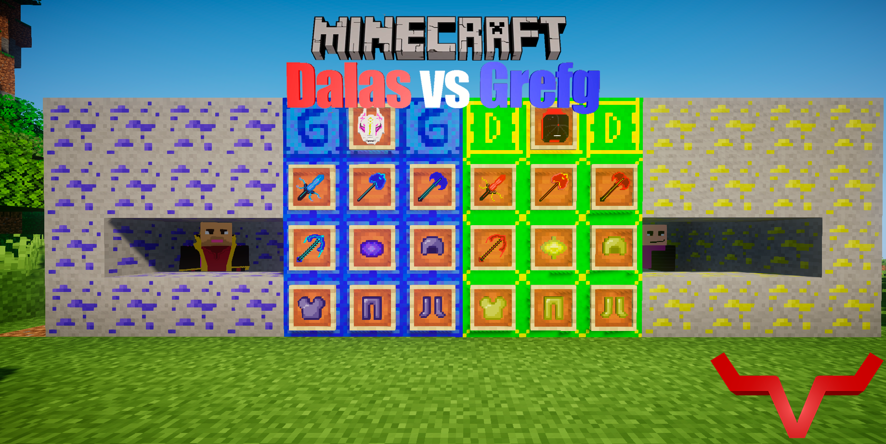
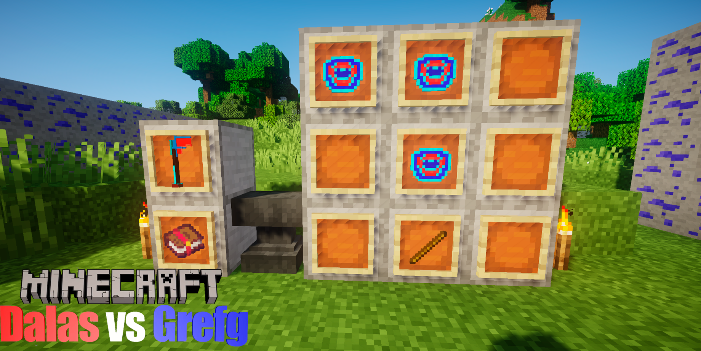
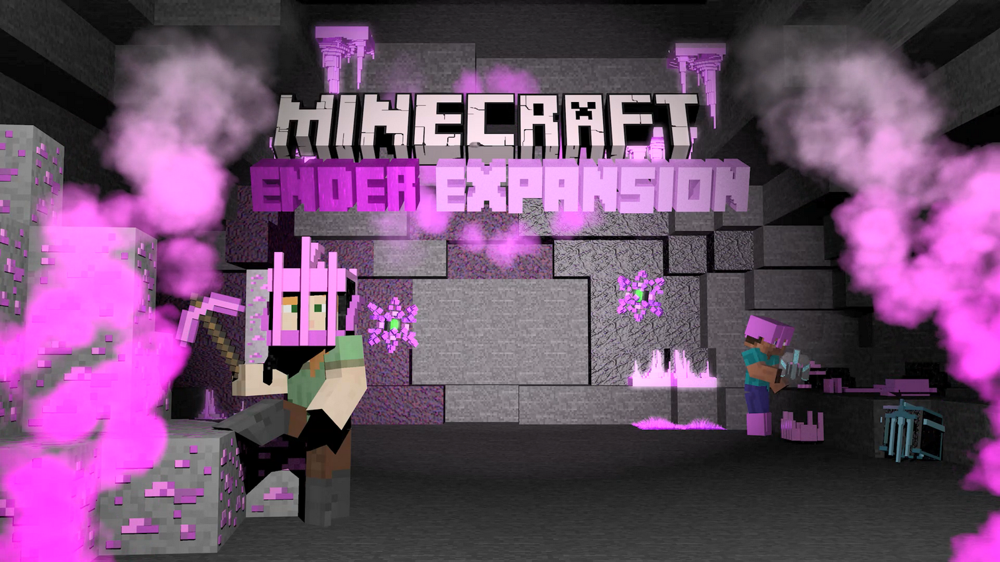

En esta sección puedes encontrar todos los mods que vaya haciendo e incluso su link de descarga, normalmente lo suelo subir en curseforge, además podrás ir viendo el desarrollo de los mods y su progreso antes de poder descargarse.
Dalas vs Grefg

Este mod trata de la polémica entre Dalas y Grefg, en este mod tienes dos minerales como eje principal que serían: Grefgtita y Dalarita, estos minerales sirven para hacer armaduras, armas e incluso los puedes combinar para hacer un arma multiusos mucho más poderosa, no solo eso si no que tambien este arma es capaz de romper bloques en un 3x3 y tiene un encantamiento único para crear bloques a partir de un poco de su vida.

The Ender Expansion
